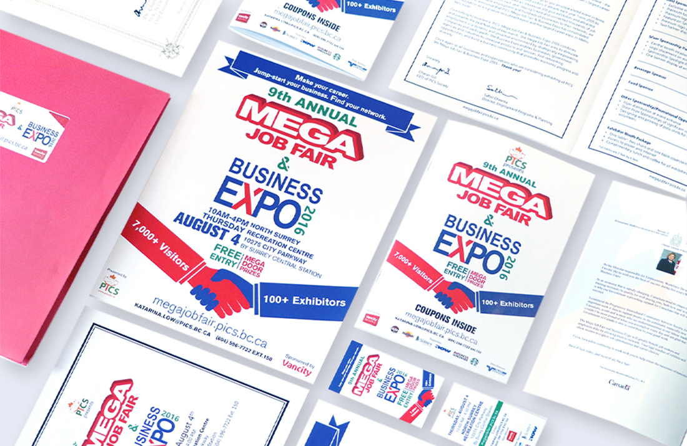
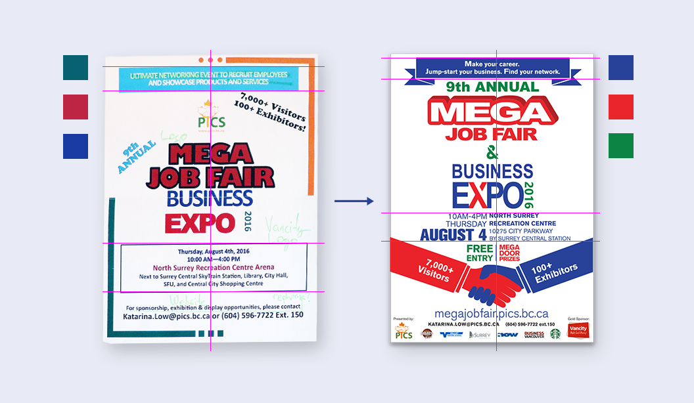
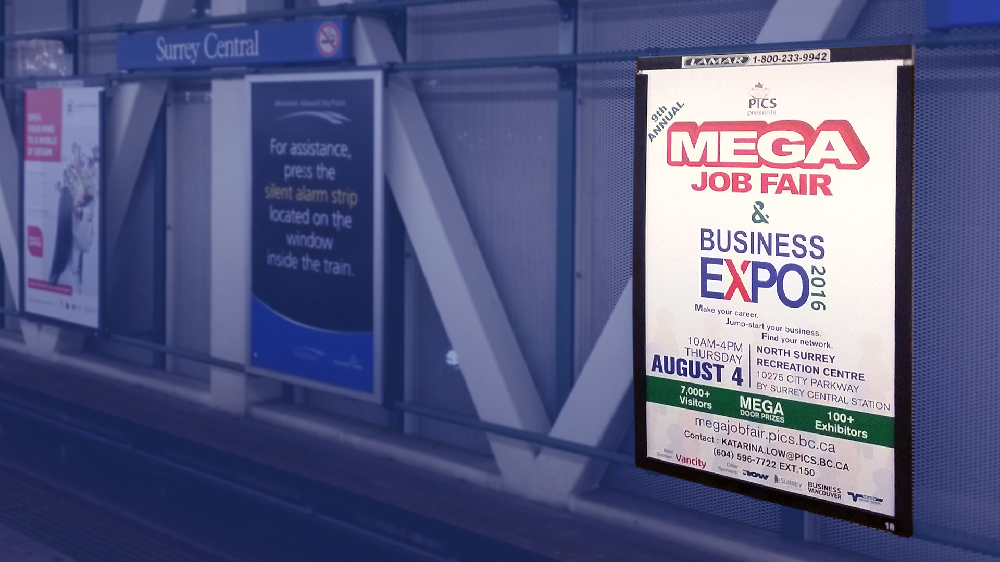
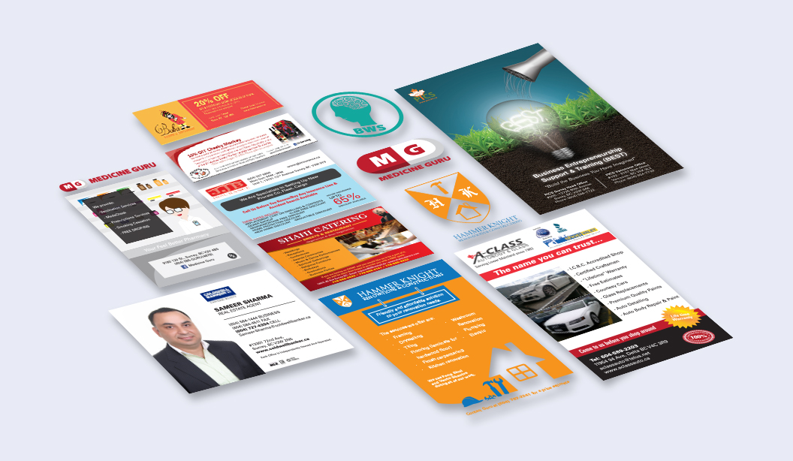
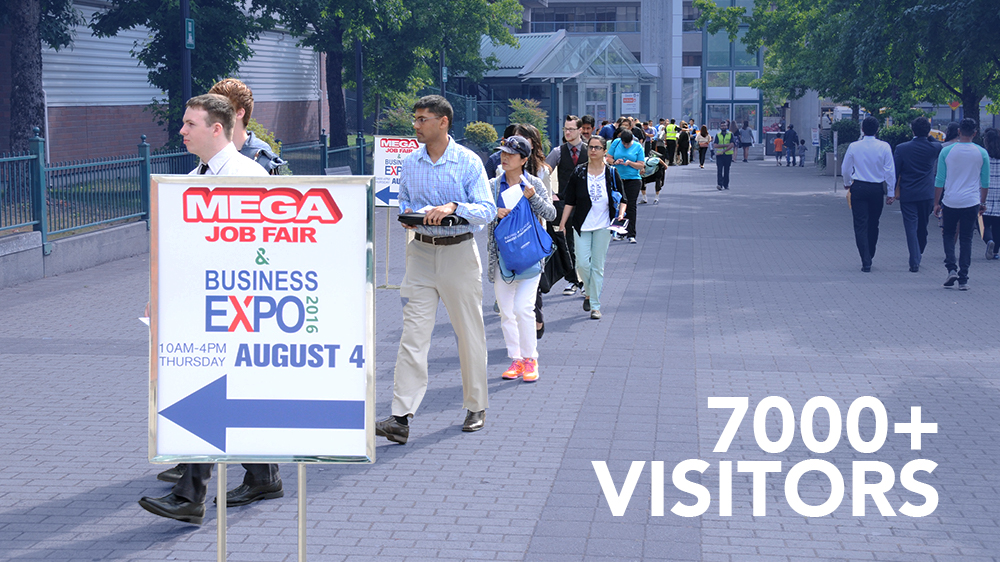

Mega Job Fair & Business Expo

Company: Progressive Intercultural Community Services Society, Non profit organization
Position: Graphic Design Intern
Date: Jun 2016 - Aug 2016
Services: Branding, Advertisement Design, Video Production, Graphic Design
The Progressive Intercultural Community Services Society is a registered non-profit organization that has been providing various social programs and services for people who are in need.
During my internship in this organization, I worked as a graphic designer for the event Mega Job Fair & Business Expo 2016 and completed a whole set of marketing materials for the event.

Provided with limited human resources, the previous event management team focused less on their visual brand image. Logo, colour scheme, fonts, and other branding elements are outdated and have limited effectiveness in communicating with current audiences. As the new graphic designer of the event, I took this as an opportunity for a much-needed rebranding.
Also, multiple partner companies of the event were startups and some of them did not have any visual branding or even a logo. Thus, I help those companies who are in need to build up their brands and generate several designs.


During the rebranding process, I try to retain the previous brand but improve the overall design. I kept the former colour choices of red, green, blue and white but proceeded with more prominent shades. The typography was kept to be bold sans-serif but was revised into a different typeface.
The alignment remained to be centred, which was designed to be simple and clean aiming to present a business casual brand image for this business event. These changes communicated a more legible and eye-catching design, which can help direct the audience's attention more efficiently.


With many iterations and revisions, I managed to complete the poster, flyer, brochure, train and bus advertisement, newspaper advertisement, event booklet and info card for the event, and an additional 2 coupons and 3 logos for partner companies. Our final deliverables were proved to be a great success and attracted more than 7000 visitors to the event.
